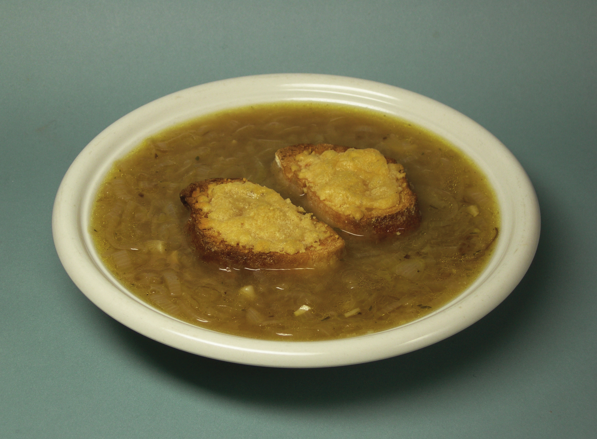

| La sopa de cebolla es un caldo en el que el principal ingrediente es la cebolla caramelizada. Es una de las sopas más conocidas. Hoy en día es una de las sopas instantáneas más populares, pudiéndose encontrar en casi cualquier supermercado de occidente. Es una sopa antiquísima (se conservó la tradición medieval de verterla sobre una rebanada de pan), y es probable que existiera en otros países europeos. Aparece en la edición más antigua del libro de cocina del siglo XIV, llamado Le viandier, de Taillevent, conservado en la Biblioteca Nacional de Francia.1 La costumbre de añadirle queso rallado es, lógicamente, muy posterior. Era un plato humilde elaborado con ingredientes 'sencillos', a veces identificado con las épocas de hambruna. Esta sopa ganó su fama en el siglo XIX, cuando se extendió en París la costumbre de tomar algo caliente en los pocos sitios abiertos a altas horas de la madrugada, las tabernas y restaurantes que rodeaban las Halles de París, el mercado central de abastos. La sopa de cebolla pasó de ser la sopa que tomaban los trabajadores del mercado a ser también un tentempié para noctámbulos. En la segunda mitad del siglo XX las Halles fueron derribadas, pero la tradición no sólo se mantuvo en ese barrio parisino sino que se extendió y se incorporó en las costumbres de los franceses de todo el país. |
 |